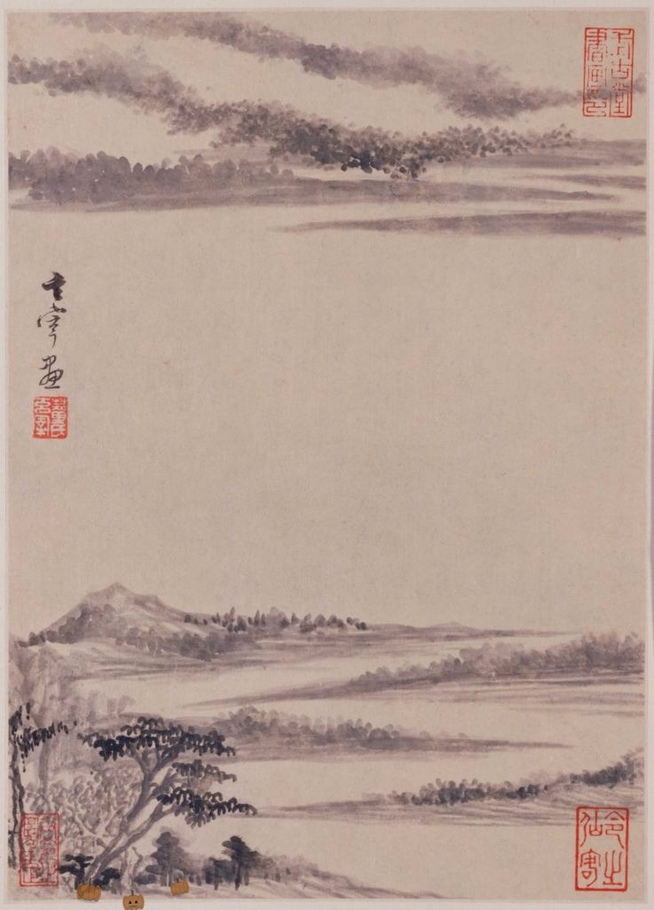

2026 Northeast Conference on Chinese Thought
October 30–31, 2026
Room 325ABC, LaCava Center · Bentley University

Conference Program
FridayOctober 30
-
8:30–9:00am
Coffee & Pastries
-
9:00–10:30am
Morning Panel 1
-
The Emergence of Self-Cultivation Techniques in Pre-Qin Confucian PhilosophyJordan Jackson, UC Riverside
The purpose of this article is to investigate the emergence of self-cultivation techniques in pre-Qin Confucian texts, treating the Lunyu 論語, the Mengzi 孟子, and the Xunzi 荀子 as a single philosophical lineage that provides increasingly robust and refined techniques for self-cultivation. Making use of the concept of ‘self-cultivation’ as detailed by Mark Csikszentmihalyi and Romain Graziani, I argue that robust techniques for self-cultivation do not emerge until the Mengzi 孟子, namely in the 2A2 passage wherein Mengzi discusses how to moralize and cultivate one’s qi 氣 in order to instantiate virtue and keep an ‘unperturbed heart’ 動心. The Xunzi 荀子 presents the most detailed account of self-cultivation techniques, largely, but not exclusively, found in the Xiushen 修身, Lelun 樂論, and Tianlun 天論 chapters. I explore these various techniques, the ways they are bound to Confucian principles outlined in the Lunyu 論語, and the ways the authors of both the Mengzi and Xunzi innovate and expand upon established Confucian philosophy to utilize burgeoning views of nature, the self, and the cosmos allowing the authors to develop robust techniques for self-cultivation effecting every aspect of the self.
While most scholarship in contemporary Anglophone Chinese philosophy focuses solely on virtue cultivation in this lineage, I argue that Confucian self-cultivation techniques require not only the cultivation of virtue, but also comes to involve the cultivation of one’s internal energies and processes. The benefits are not just moral or political, but are meant to benefit the physical, intellectual, and social well-being of the individual, and by extension the community, society, and ultimately world, and should leave the individual and state in a state unperturbed by external contingency.
-
Extension Is Not Simulation: on the Absence of Perspective-Taking in the Analects and Zhu XiQianyi Qin
In a series of papers, Justin Tiwald has argued that Zhu Xi (朱熹, 1130–1200) anticipates an important and under-studied distinction in contemporary empirical moral psychology: between “self-focused” perspective-taking, which reconstructs another’s experience by projection and analogy from oneself (推己及人, tui ji ji ren), and “other-focused” perspective-taking (以己及人, yi ji ji ren), which does not rely on the self in the same way. On Tiwald’s reading, Zhu Xi regards the latter as superior and as alone compatible with benevolence (仁, ren). In this paper, I challenge this reading through examining its textual basis in the Analects and in Zhu Xi’s corpus as well as engaging with work on perspective-taking and empathy in social psychology.
As a preliminary note, I offer a critical evaluation and precisification of notions of perspective-taking and empathy as employed by readers of Confucian and Neo-Confucian texts. As used in social psychology, “empathy” encompasses a variety of mental processes. Concern or “empathetic concern” and perspective-taking are conceptually distinct and empirically dissociable processes that could but do not reliably co-occur. In short, concern is feeling for another, whereas perspective-taking is feeling as another. These concepts are not sufficiently distinguished by many who work on Chinese moral psychology. Imposition of such a polysemous modern concept such as empathy without precisification can generate confusion.
Then, through a close reading of the Analects 6.30 and Zhu Xi’s commentaries on the Analects, I argue that Zhu Xi’s tui ji ji ren is better understood as inference-making or perspective-giving, rather than perspective-taking; moreover, the notion of 及人 (ji ren) is largely action-oriented rather than knowledge-oriented. Similarly, yi ji ji ren is spontaneous other-directed prosocial motivation, rather than spontaneous, unbiased construction of another’s mental state. In the process, I offer a new translation of some of Zhu Xi’s relevant commentaries, highlighting the ambiguities within the text. I also explore the notion of oneness in social psychology as a better framework for comparison with Zhu Xi’s moral psychology.
This work contributes to scholarship on Zhu Xi and (Neo-)Confucian moral psychology. Methodologically, this work highlights the importance of close reading and careful translation that preserve linguistic ambiguity, and the danger of hastily importing contemporary concepts onto culturally and historically distant texts.
-
How a shi 士 becomes a thief: Reading Mengzi 7B31 Past the Opening LinesHagop Sarkissian, CUNY, Baruch College
Mengzi 7B31 opens with two universal-sounding claims (everyone has situations toward which they are not callous, everyone has acts they will not perform) and closes, in its last breath, with a professional indictment of the gentleman retainer (shi 士) whose speech is mistimed, classified as 穿踰之類: of a kind with the housebreaker who tunnels under walls and climbs over them. Why does a passage framed as 人皆有 narrow so sharply to the shi 士? And why through the vocabulary of burglary?
When 7B31 is cited, it is cited for its 充 and 達 vocabulary, treated as a lexical companion to 2A6’s account of extending the 四端 and 7A15’s account of ‘extension’ 達. On that habit, the passage is just a further witness to doctrines stated elsewhere. Read as a whole, however, 7B31 is a single tightly wound argument whose target has been the 士 from the first character. Its universal-sounding premises are the mechanism by which the 士-reader is enlisted; its three inward conditions (two dispositional, one relational-postural: the substance of not accepting dismissive address) specify what the role requires; and its closing verb 餂 (“to lure with bait”) names what the retainer does when the postural condition goes unfilled. The burglary image then identifies the ultimate victim: the commoner household the retainer’s role was constituted to protect.
The philosophical yield is a Mencian theory of the dao of the retainer — including its structural position, inward conditions, normative outputs, and characteristic failure modes — coordinated with a political account in which the retainer’s speech-failure is continuous with theft from those without power.
The passage rewards being read to its close. And 7B31 is one of many passages whose most-cited lines have obscured what the whole is arguing; reading the Mengzi for doctrinal vocabulary rather than for what its passages actually do costs us more of the text than we tend to notice. Or so I argue.
-
-
10:30–10:45am
Break
-
10:45am–12:15pm
Morning Panel 2
-
On Benevolence Through Sentiment: An Inquiry into Xunzi’s Order of BenevolenceJifen Li, Renmin University of China; University of Hawai‘i at Mānoa
In the long-standing academic research on Xunzi’s thought, most studies have focused on such dimensions as his theory of Heaven, theory of human nature, and theory of ritual propriety. By contrast, there remains considerable room for specialized investigation and in-depth interpretation of his theory of benevolence (ren 仁). However, when viewed against the intellectual and theoretical context of Xunzi’s era, benevolence was a core topic commonly explored by various schools of thought. As a former Grand Administrator of the Jixia Academy, Xunzi must have engaged with this concept. He indeed valued benevolence, yet the distinctive focus and unique characteristics of his discussion of ren still require further clarification.
In this regard, many recent scholars have drawn attention to the remark “the person of benevolence loves himself” (ren zhe zi ai 仁者自爱) in the Xunzi’s “The Way to Be a Son” (zi dao 子道) chapter, arguing that Xunzi’s thought on benevolence emphasizes the self-cultivation of the virtuous subject. Building on existing research that centers on virtuous self-cultivation, this paper further contends that the interpretive framework of understanding “self-love” (zi’ai) as “self-cultivation” (zi’xiu 自修) still leaves room for expansion in theoretical depth and conceptual completeness. On the one hand, Xunzi’s discussion of benevolence does not primarily revolve around the inherent nature of benevolence (ren xing 仁性), but rather centers on benevolent dispositions (ren qing 仁情), especially the affective bond between kins. On the other hand, while Xunzi valued benevolent love, his theoretical concern extended beyond mere moral self-cultivation to inquiries into political order grounded in the realities of natural human emotions.
Xunzi’s discussion of benevolence emphasizes the dimension of sentiment, putting forward the idea that “the benevolent person loves oneself.” This proposition is closely bound up with his pursuit of political order, constituting an inquiry into the fundamental issues of the human-sentiment order. Benevolence begins with natural human sentiment — namely, the gradations of closeness and distance toward kin by blood ties. On the basis of such natural consanguinity, a basic framework of human ethical order is established. Taking filial love for one’s own kin as the root of all conduct constitutes the basis of the human way. Proceeding from this “Human Way,” Xunzi highlights the active agency of the subject practicing benevolence. The idea that the benevolent person loves oneself underscores the self-accomplishment of benevolence. One who cultivates benevolence must treat others with sincerity and value solitary vigilance (shendu) so as to diligently uphold benevolence. Taking self-love as the root also deepens the conception of benevolence from the perspective of governing principles. The practitioner of benevolence must attend to the attainment and embodiment of benevolence in one’s own person; in this process, one must both maintain solitary vigilance and treat others properly, as well as reflect on subtleties and nurture one’s person.
-
Xunzi and the Ke Problem: What Determines Action?Michael Reynolds, University of Hong Kong
In Xunzi’s philosophy we act when our heart/minds designate a certain course of action as ke 可, a term which spans meanings from ‘possible’ to ‘appropriate’. Its interpretation, however, has been a matter of controversy, motivated by the apparent contradiction between Xunzi’s assertions that our overabundant desires lead to over-pursuit of scarce goods; and his assertions that all action is caused by what the heart considers ke, and thus desire is irrelevant to action. I present a new interpretation which aims to reconcile these two propositions: all action results from a designation of ke, but this designation is sometimes made by our spontaneous dispositions.
My argument relies on a reinterpretation of the two lines: ‘(1) Taking the objects of desire as ke to be obtained and seeking them are what the dispositions (qing 情) necessarily cannot avoid. (2) Taking a course of action as ke and guiding it is where the understanding must come into play’ (XZJS:641–642). I argue first that (1) refers to the granting of ke by the dispositions, as suggested by the symmetry of (1) and (2). I also respond to the objection that the dispositions are not the type of thing which can grant ke, with two points: first, the ‘dispositions’ in the wider Warring States context should not be understood as ‘feelings’, but rather as ‘human beings’ interaction, or relational-adaptational encounter, with the world’ (Middendorf 2008: 141); and second, the dispositions and associated organs serve a similar function of applying names and distinguishing between alternatives elsewhere in the text. Moving on from this, I propose that (1) states that all objects of desire will be deemed ke by the dispositions. In doing so I dispute Eric Hutton’s (2016) reading of (1), who argues that ‘necessarily’ in this sentence means ‘necessarily, sooner or later’. I argue that the correct subject of analysis is not bi 必 ‘necessarily’, but rather bibumian 必不免 ‘necessarily cannot avoid’, which decisively means ‘necessarily, in all cases’ in several parallel passages.
In practice this means that we spontaneously and instinctively view as ke (appropriate/possible) the courses of action that we desire, and so pursue the objects of our desires. Moral progress can happen in (2) when the understanding revises what the dispositions take to be ke, and instead takes as ke what we believe to be right. This is possible as (1) and (2) refer to a kind of internal debate inside us. These judgements about what is ke are open to revision, but once a person kes something it will lead to action. I view this process as similar to Xunzi’s account in which the preliminary instinctive judgements of the senses are overruled by the ‘verifying knowing’ of the heart to accord with correct categories.
This view has some interesting wider implications. For Xunzi the gentleman is a midway stage in moral development: he knows what the good is and pursues it, but his dispositions have yet to be transformed, and so his actions, whilst correct, are careful and lack fluency. I suggest my account explains this well: the gentleman’s dispositions and understanding are in discord with regard to what they take to be ke. In this respect Xunzi’s account comes to resemble Tamar Gendler’s (2008) account of the behaviour of someone with discordant instinctive ‘aliefs’ and cognitive beliefs. Differing from Gendler, however, Xunzi offers a clearer account of how these conflicts are resolved: preliminary ‘takings’ resolve into an action-guiding ke.
-
Individual Distinction-Making (Bian) and Skillful Activity in Zhuangzi’s ThoughtDanesh Singh, Borough of Manhattan Community College (CUNY)
I attempt to more fully describe Zhuangzi’s view of the role of distinctions (bian) in knowing, particularly as it concerns skillful activity. We can better understand Zhuangzi’s view by contrasting it with both Mohist and the Confucian Xunzi’s views of language, who take distinctions to go hand in hand with the social function of language. For Zhuangzi, distinctions enable skill masters to engage in skillful activity, which can be understood as a form of individual, rather than social knowledge.
For the Mohists and Xunzi, language is related to distinctions insofar as it marks social distinctions and enables communication. For Zhuangzi, distinction making is largely separable from the social use of language. Distinctions are made on the basis of sense perception, which facilitates knowing in the form of skillful activity.
Specifically, the Mohists and Xunzi generally understand language as serving a social knowledge function. While people have and express thoughts, these thoughts are generally explained by the social meanings of words or names. Additionally, these thinkers generally take an extensional approach to language, which defines the meaning of a name by what it refers to. Shared norms fix reference and thus provide an explanation for how names can come to represent objects and express thoughts.
This predominant view of language is a helpful contrast to Zhuangzi’s view, especially in terms of how Zhuangzi portrays knowledge in the skill stories. Skill masters make distinctions that facilitate knowledge and skillful activity, but these distinctions are not based on social meanings, because social distinctions themselves cannot make one good at a skill. Instead, what is required are individual distinctions. Distinctions are individual in that they are not based on social meanings and language. They are based rather on personal experience and sense perception, which facilitates a skillful knowing that accounts for particular contexts and situations.
-
-
12:15–1:30pm
Lunch
-
1:30–2:30pm
Afternoon Panel 1
-
How Wu-Wei Remedies Value Capture in the WorkplaceDylan Flint, Otterbein University; Erich Jones, The Ohio State University
As society becomes increasingly data driven, we often find difficulty pursuing values that we reflectively endorse. To take a mundane example, someone who values fitness and health might begin using a Fitbit to track their exercise routine only to end up obsessively counting the number of steps taken, since that is what the Fitbit tracks and rewards. This mismatch between what we reflectively value and what we end up pursuing is known as value capture (Nguyen 2020, 2026).
This paper addresses value capture insofar as it poses a problem in the workplace: certain metrics an employer chooses to track and incentivize can inadvertently supplant a professional’s own reflectively endorsed values. For example, a nurse may get into healthcare because she values delivering excellent patient care only to end up pursuing on-time charting, low readmission rates, or high patient satisfaction scores because these are the metrics that her hospital tracks and rewards. This mismatch between one’s reflectively endorsed values and what one ends up pursuing often leads to alienation: the sense that one is not “at home” with oneself.
This paper draws from East Asian philosophy to answer this problem. We argue that by cultivating a wu-wei (無為) mindset individuals can both prevent and cure value capture. Moreover, this can be accomplished without sacrificing on the job performance.
We explain how by first considering what wu-wei is. Wu-wei literally means “do nothing,” but it is not about laziness or inaction. Instead, as Edward Slingerland clarifies, “[wu-wei] refers to the dynamic, effortless, unselfconscious state of mind of a person who is optimally active and effective” (Slingerland, 2014). Examples of people who are in wu-wei include people who are laser-focused, optimally responsive to their environment, and able to accomplish the extraordinary.
For the purposes of this paper, there are two key characteristics of wu-wei that are especially relevant. First, individuals in wu-wei do not harbor thoughts of external goods, such as raises, bonuses, titles, other accolades, or losses thereof (Kee et al. 2021). Instead, they are completely present in their activity. Second, individuals in wu-wei often experience a sense of total immersion in a larger, shared whole that resonates with their values (Slingerland, 2014).
Our argument is that because individuals in wu-wei are not striving for external goods, they will be resistant to incentives responsible for value capture. For example, a nurse’s activity won’t be reduced to the pursuit of certain metrics if she remains completely focused on delivering excellent patient care regardless of the rewards or punishments attached to those metrics.
In addition, wu-wei not only wards off value capture, but it also remedies the problem of alienation. Because wu-wei integrates us with our values, when we are in wu-wei we feel “at home” with ourselves. The trick is to see the metrics that we are often asked to pursue as ways of “living out” our values in a particular context. For example, if a nurse can see obtaining high patient satisfaction scores as a way of delivering excellent patient care in the given context, then she can directly immerse herself in what she values most knowing that this pursuit will indirectly satisfy the metrics she is asked to pursue.
The paper proceeds as follows. In section one, we detail what value capture in the workplace looks like and why it is problematic. In section two, we cover key characteristics of wu-wei and explain how it can function as a remedy for value capture without sacrificing professional performance. Finally, in section three we cover multiple actionable strategies for implementing wu-wei in the workplace.
-
Compliance and Character: Integrating Han Feizian and Confucian Approaches to Business EthicsHenrique Schneider, Independent Scholar
The field of business ethics often grapples with the tension between compliance-based frameworks and integrity- or virtue-based approaches. This tension finds a compelling historical and philosophical parallel in the debates of early Chinese thought, specifically between the fa (standards/law) tradition of Han Fei and the virtue ethics of early Confucianism, particularly that of Mengzi. This paper explores how these two philosophical frameworks approach organizational ethics and examines the degree to which they can complement each other in contemporary corporate governance.
Han Fei’s political philosophy provides a robust foundation for a compliance-based view of business ethics. Operating from the premise that human beings are driven by self-interest, Han Fei argues against reliance on moral cultivation or the presumed virtue of individuals. Instead, he advocates for the strict application of fa (objective standards and rules) and the “two handles” of rewards and punishments to manage behavior and ensure organizational stability. As Eirik Lang Harris has demonstrated in his contribution to the volume Adventures in Chinese Realism (2022), Han Fei’s insights into human dispositions offer a pragmatic lens for analyzing corporate behavior, suggesting that businesses must structure incentives and regulations to align self-interest with organizational goals, regardless of individual moral character.
In stark contrast, early Confucianism, particularly the thought of Mengzi, provides a virtue-based view of business ethics. Mengzi posits that human nature contains innate moral “sprouts” that, when properly cultivated, develop into virtues such as ren (benevolence) and yi (righteousness). Henrique Schneider, in his volume The Early Confucian Philosophy of Agency: Virtuous Conduct (2024), characterizes this approach as a process view of self-cultivation where agents align their actions with virtues and social roles. Applied to the corporate realm, this perspective emphasizes the development of ethical character, ethical leadership, and a corporate culture grounded in moral integrity rather than mere adherence to rules.
This paper will first articulate the theoretical foundations of both approaches within their historical contexts. It will then translate these frameworks into contemporary business ethics paradigms, contrasting the Han Feizian reliance on checklists, audits, and incentive structures with the Confucian emphasis on moral education, corporate social responsibility, and virtue-driven leadership.
Finally, the paper will examine the potential for complementarity between these seemingly opposed systems. While Han Fei criticized Confucian moralism as ineffective for governance, and Confucians viewed strict legalism as corrosive to human goodness, a synthesis is possible in modern organizations. A robust compliance system (the Han Feizian approach) can establish a baseline of acceptable behavior and prevent egregious misconduct, thereby creating a stable environment in which ethical culture and character development (the Confucian approach) can flourish. By integrating the pragmatic realism of Han Fei with the moral idealism of Mengzi, organizations can develop a comprehensive ethical framework that addresses both systemic risks and the cultivation of human flourishing.
-
-
2:30–2:45pm
Break
-
2:45–3:45pm
Afternoon Panel 2
-
When Han Feizi Meets AI GovernmentNalei Chen, New York University
Han Feizi (c. 280 BCE–233 BCE) was an ancient Chinese philosopher whose ideas greatly influenced Chinese political practice. He advocates for a bureaucratic government that is “machine-like,” although the machine was invented thousands of years later. His argument is based on several key assumptions. First, the state is large and populous. Moreover, most humans are driven by self-interest and cannot be morally transformed at a massive scale. Accordingly, maintaining stability and order, along with other administrative tasks, is highly challenging, both qualitatively and quantitatively. Furthermore, most rulers are mediocre with limited political agency as well as personal passions and biases, potentially leading to problematic decision-making and disruption of governmental operation. With all these reasons considered, the ruler should not govern the state by himself, but should do so through a bureaucratic administration that is rule-bound, impersonal, and staffed with professional bureaucrats. Moreover, since these bureaucrats are self-interested and biased, the system should operate on criteria that can be evaluated as objectively as possible, thereby preventing them from acting arbitrarily. With this system established, most governance tasks are delegated to professional bureaucrats; the ruler should do nothing but check the performance of bureaucrats objectively. If their performances match their duties or proposals, then they will be rewarded. If not, then they will be punished. The machinery outlook of Han Feizi’s bureaucratic system, operating independently of human factors, is well observed by A. C. Graham in his seminal work, Disputers of the Tao, as he states, “he [the ruler] has no functions which could not be performed by an elementary computer” (291).
Han Feizi advocates for a bureaucratic system that aims to eliminate all human factors, which he believes disrupt decision-making and government operations. Contemporary supporters of AI government, which has gained much traction in recent decades, share a similar view. They argue that many government failures stem from well-documented limitations of human decision-making, such as cognitive biases, memory constraints, fatigue, and group dysfunctions. Therefore, they promote the idea of automated administration using AI tools to overcome these limitations, ultimately leading to more efficient governance. In this project, I put Han Feizi and contemporary proponents of AI government in conversation. The expected outcomes of this comparative study are twofold. First, I argue that the concepts put forth by Han Feizi are not outdated; rather, they are highly relevant to our modern context through a study of AI governance. Second, by conducting a comprehensive examination of Han Feizi’s philosophy, we can provide contemporary AI governance with a deeper critical understanding. On the one hand, proponents of AI governance may find robust philosophical support from Han Feizi for the use of automated AI tools in the public sector. On the other hand, the common critiques of Han Feizi’s philosophy from Confucian thinkers will also serve as a reminder of the limitations and challenges associated with automated administration. These critiques highlight the necessity for context-specific or particularistic assessments, an issue that Han Feizi’s philosophy struggles to address effectively.
-
Before Helping: Xinzhai and the Recalibration of the Helper in the ZhuāngzǐHin Ming Frankie Chik, Wesleyan University
This paper argues that the opening dialogues of the “Ren jian shi” 人間世 shift attention from the transformation of the person being helped to the prior transformation of the would-be helper. Rather than asking first how one may successfully persuade, reform, or rescue another person, these passages ask what kind of heart-mind is required before one can respond to another’s situation without distortion. On this reading, xinzhai 心齋 is not merely a mystical inward technique, but the ethical recalibration of the one who would advise, teach, guide, or intervene.
Recent scholarship has productively shown that the Zhuangzi develops forms of receptivity, empathy, and affective attunement. Building on this work, I focus on the first three dialogues of the “Ren jian shi”: Yan Hui and Confucius, Zigao and Confucius, and Yan He and Qu Boyu. Read together, these passages do not present a single, stable script of help-seeking. Zigao and Yan He explicitly seek guidance, whereas Yan Hui initially appears not as a seeker of help but as one taking leave before action. This difference is philosophically revealing. It suggests that in the Zhuangzi, the person most in need of guidance may not yet recognize himself as needing help, and that the helper’s first task is therefore to interrupt, reframe, and expose the inadequacy of the initial stance from which intervention would proceed.
The paper argues that what must first be treated is the helper’s own chengxin 成心. If one approaches another person while still governed by fixed judgments, moral self-certainty, or the desire to impose one’s own standards, one merely turns help into self-projection. Xinzhai loosens the hold of such fixations and makes possible a more adequate responsiveness to another’s concern, including concerns not yet fully articulated in speech. This point is especially significant in light of the chapter’s repeated attention to danger, misunderstanding, and failed persuasion. The issue is not simply whether one means well, but whether one can hear another without overwriting that person’s situation with one’s own assumptions.
At the same time, this paper argues that the Zhuangzi does not reserve the role of helper for a fixed ideal sage. Confucius appears in these dialogues as a guide, yet elsewhere in the text he too becomes one who must learn, be corrected, or seek insight from others. This reversibility matters. It suggests that the Zhuangzi imagines not a rigid hierarchy of teachers and pupils, nor a fully articulated communal ethic, but a relational world of reciprocal counsel in which the positions of helping and seeking help remain fluid. What matters is not possession of a permanent superior identity, but whether one has undergone the prior work necessary to respond well.
By shifting attention from the success of persuasion to the prior formation of the persuader, this paper shows that the Zhuangzi offers not only a critique of fixed judgment but also a distinctive ethics of helping.
-
-
3:45–4:00pm
Break
-
4:00–5:30pm
Keynote Address
- Why Pluralism Requires Ontology: A Dialogue on Irreductionism and Action Mercedes Valmisa, Associate Professor of Philosophy & Religious Studies, Gettysburg College
SaturdayOctober 31
-
8:30–9:00am
Coffee & Pastries
-
9:00–10:30am
Morning Panel 1
-
The Confucian Threshold of Sufficiency: A Moralized AccountXinting Liu, University of Illinois at Urbana–Champaign
It is widely accepted that Mengzi advocates for a combination of a social minimum and a hierarchical meritocracy regarding the distribution of economic goods (Chan, 2015; Jin, 2023; Huang, 2024). This social minimum has traditionally been understood as a fixed quantity of goods, as evidenced by the following passage: “[T]o plant mulberry-trees in every homestead of five mu so that people of fifty years old can wear silk clothes; to raise chickens, pigs, dogs, and swine… so that people of seventy years old can have meat; to not take away time from people… so that a family of eight will have enough to escape starvation (1A7).” In this context, the Confucian threshold is interpreted as an objective list of economic goods designed to ensure that the people’s basic biological needs are met.
However, this interpretation overlooks the fact that the Confucian economic threshold is dynamic and contingent upon an individual’s moral achievement. “It is only a gentleman who will be able to have a constant mind despite being without a constant means of livelihood. The people, lacking a constant means of livelihood, will lack constant minds. (1A7)” As this passage shows, the economic threshold for sufficiency is not a fixed quantity of goods applied uniformly to every member of society. This observation raises the question of how Confucians establish a minimum threshold for the distribution of economic goods.
This paper defends a moralized threshold within Confucianism, arguing that the standard for having enough is defined by a moral concept. On the first view, the threshold is determined by the concept of humanness (ren), specifically the heart that cannot bear the sufferings of others. Understood this way, the social minimum is established at the point where people can no longer bear to witness the suffering of others (Crisp, 2003). In another interpretation, the threshold is defined by the degree of material possession required for moral autonomy, that is, the capacity to be held responsible for one’s actions. “Those who have permanent property will have steadfast hearts, while those who lack permanent property will lack steadfast hearts. If they lack steadfast hearts, there is nothing they will not do in terms of depravity, evil, and excess. To wait until they have fallen into crime and then punish them is to entrap the people (3A3).” Here, the importance of economic goods is derived from the necessity of maintaining moral agency. Under this framework, a sufficiency of goods serves as a precondition for the moral autonomy required for citizens to be justly held accountable for their conduct (Shields, 2017).
-
Moderate Confucian Perfectionism: A RevisionWenyang Gao, Brown University
Can Confucian values be promoted in modern pluralistic societies without violating value pluralism? It is generally held that any viable account of Confucian perfectionism must satisfy two core criteria: “liberal accommodation” and “Confucian intelligibility” conditions. Based on his theory of “moderate perfectionism,” Joseph Chan proposes “Confucian political perfectionism,” allowing the state to promote discrete Confucian values in a piecemeal way. Chan’s Confucian perfectionism has faced criticism on both fronts. On the one hand, both Confucians and liberal critics argue that Confucianism can only be promoted as a comprehensive doctrine. Hence, they contend that Chan’s account fails the “Confucian intelligibility” and “liberal accommodation” conditions respectively. On the other hand, sympathetic liberal critics claim that Chan’s account fails the “liberal accommodation” condition also because it prioritizes Confucianism over other comprehensive doctrines. They argue that Chan’s account should be amended by a “freestanding reason justification” procedure. However, it is dubious whether their revised account permits promotion of Confucian values.
This article refines Chan’s Confucian political perfectionism without committing itself to his theory of political meritocracy. I identify three key questions of contention: (1) whether Confucian values can only be promoted as a comprehensive doctrine; (2) whether the public reason proviso is a good approach to amend Chan’s Confucian political perfectionism; and (3) what Confucian virtues can be conducive to democratic citizenship.
I argue that the state should not promote Confucianism as a comprehensive doctrine. The state can promote Confucian values in a piecemeal way without generating oppression. In public deliberation, citizens can invoke Confucian values in terms that do not require prior acceptance of Confucianism, which can be shared by others who do not necessarily accept other elements within Confucianism. Yet, citizens do not need to justify Confucian values with reference to freestanding reasons. Moreover, from the Confucian perspective, since people live a holistic life, we had better cultivate virtuous democratic citizens qua virtuous human beings. Confucian virtues are conducive to democratic citizenship, though Confucian philosophy on its own cannot provide all civic virtues.
Thus, to Confucians, I suggest that Chan’s moderate perfectionism approach is effective. Meanwhile, perhaps contrary to some Confucians’ expectation, my account suggests that the moderate perfectionism framework is applicable to all sorts of comprehensive doctrines. Confucian values do not maintain a superior status in comparison to values derived from other comprehensive doctrines. To liberal critics, I maintain that their “public reason proviso” approach unduly undercuts the possibility of promotion of Confucian values in pluralistic societies.
-
In Defense of Confucian Moral EqualityRanjoo S. Herr, Bentley University
In this presentation, I offer an in-depth analysis and defense of Confucian moral equality, which is the Confucian idea that Confucian persons, regardless of personal background, are equal in their ethical potential to become a junzi. Here are some examples of Confucian moral equality: Mengzi famously stated that the heart-mind (xin), which contains the sprouts of ethical virtues, is common to all humanity, sages and ordinary humans alike (Mengzi 6A.6; 6A.7). Indeed, the legendary Confucian sage emperor Shun was originally a peasant who “arose from the plowed fields” (Mengzi 6B.15). Hence, all persons “can become a Yao or a Shun” (Mengzi 6B.2; see also 4B.32) if they would apply themselves diligently in self-cultivation to realize their ethical ideal (Mengzi 6A.15; Analects 17.2). Although most contemporary Confucian philosophers recognize that Confucianism subscribes to an idea of moral equality, many downplay its significance (Li 2012; Tan 2015). I examine and rebut their arguments and demonstrate that Confucian moral equality is the foundation on which the entire Confucian moral edifice stands.
After establishing Confucian moral equality’s foundational status in Confucianism, I then argue for Confucian gender equality as a subset of Confucian moral equality. Confucian gender equality is equality between women and men in their moral capacities to approximate the Confucian ethical ideal of junzi. This logically follows from Confucian moral equality. Since there is no clear textual evidence in the Confucian Four Books that women are inferior to men in their innate cognitive or affective capacities, women are also capable of approximating the Confucian ideal of junzi through self-cultivation. This is Confucian gender equality. Confucian gender equality undergirds my conception of Confucian feminism. As evidence for Confucian gender equality’s authenticity, I examine some premodern Confucian “feminists” who embraced Confucian gender equality.
-
-
10:30–10:45am
Break
-
10:45am–12:15pm
Morning Panel 2
-
Beyond Retrieval and Loss: Zong Bing and Xunzi on the Forms of RemembranceWeian Ding, Texas A&M University
How ought one properly to remember the past? This question haunts Western thought, from Socratic philosophy and Enlightenment historicism to contemporary debates about memory and loss. The paper positions Zong Bing and Xunzi between two influential tendencies in Western philosophy of history and memory. On one hand, there is an optimism of historical retrieval, in which the past can be recovered, re-enacted, or rationally preserved. On the other, a rhetoric of loss, in which historical memory arises from rupture, disappearance, or the impossibility of direct access. Yet Zong Bing and Xunzi show that remembrance is not merely the recovery of visible history, but the disciplined formation of relation to what has withdrawn from view. Through image, ritual, patterned form, and affective training, the absent past can be passed on, felt, and ethically redirected without being falsely restored as present. I call this account “formed remembrance” (形文之憶): a way in which absence is given shape through image, ritual, patterned form, and disciplined affect.
The argument proceeds by placing Zong Bing’s Preface on Painting Landscape 畫山水序 in dialogue with Xunzi’s account of mourning ritual in the “Discourse on Ritual” 禮論. The two texts appear, at first, to address different concerns. Zong Bing asks how mountains and waters, when physically distant, may nevertheless be approached through painted form, image, and spirit: 形, 象, 神. Xunzi asks how the living may remain rightly related to the dead through ritual forms that express, order, and transform grief: 禮, 文, 情. Yet both thinkers are concerned with a shared problem: how can one remain in relation to what is absent without simply converting absence into presence? Zong Bing shows that form is not a merely secondary substitute for an absent object: painted landscape opens a mode of access in which the absent may still be contemplated, approached, and dwelt with. Xunzi discusses and supplements why such a relation to absence requires ethical measure: mourning ritual does not restore the dead, nor does it dissolve grief, but gives grief a patterned form through which affection may be expressed without losing the difference between the living and the dead.
The contribution of this paper is to show that this underdiscussed relation between Zong Bing and Xunzi discloses a third way beyond retrieval and resignation of historical memory. Historical memory is not simply the recovery of what was once visible, nor the tragic acceptance that the past is lost. It is the disciplined formation of relation to absence, so that what is no longer present can still be felt, transmitted, and ethically redirected. By bringing Chinese aesthetics and ritual theory into dialogue, this paper contributes to broader philosophical discussions of memory, grief, and historical relation, showing that Chinese thought offers an account of remembrance centered not on tragedy nor hope, but on cultivating the forms through which what is absent may continue to matter. Such mattering, I conclude, reveals a cosmopolitan dimension of remembrance: the shared human task of giving form to what is absent without erasing its absence.
-
Finishing a LifeBenjamin Ra, Georgetown University
Across a striking range of cultures, the dead still hold an uncanny power over the living. One must not, for example, speak ill of them, and when someone does (as happened recently in American political life), the outcry is overwhelming. And this goes way beyond the nil nisi bonum taboo. An even more striking example of the dead’s power is to be found in those individuals for whom the passing of an elder or a loved one unleashes a will to complete their unfinished legacy through the conduct of their own lives. As a concrete example of this phenomenon, one can think of Ted Turner, who, upon his father’s tragic death (by suicide), took over the latter’s media company and strove to redeem his legacy. A descendant here strives to complete the moral legacy of a forbear. Contemporary moral philosophy struggles to explain this “moral completion,” in which one attempts, through one’s own life, to realize, redeem, or disclose the moral significance of a forbear. The object of moral concern here is neither the acting self nor another living person but the moral significance of one who has already died.
In order to explore this phenomenon, I have drawn less from the traditional schools of moral philosophy and more from thinkers like Paul Ricoeur, Charles Taylor, and Alasdair MacIntyre, who have all explored how narrative and memory condition moral orientation. Freud, too, cannot be avoided, though his main function in this paper will be as foil. Mostly, however, I will engage with Confucian thought. Postmortem obligations are a big part of Confucian filial piety (xiao 孝). Instead of attempting an overview of such a large topic — which would inevitably lead to a general and lukewarm account — I choose to focus on a single case. This is the legend of the Great Yu 禹, who by taming the waters, fulfills and redeems the unfinished life of his father Gun 鯀. The fact that this story is not usually treated as paradigmatic of filial piety allows us to isolate moral completion as something more fundamental to moral experience (of which filial piety is a particularly rich manifestation).
If a life in its entirety has moral value, that value is not at all determined solely by the one who lived that life. Rather, it is a continuing project that is handed down from generation to generation, outliving the bounds of a single life. That my morality is not for me alone to determine — this is not surprising. Environment matters, as do my forbears. What is surprising is the idea that my morality must be completed by my descendants, for then it must also be the case that I am, even at this very moment, morally completing my forbears, and what I become in this life will also reveal what my forbears have been in theirs — in living, I interpret my history.
-
A Duty to Grieve? A Confucian PerspectiveWenqing Zhao, CUNY, Baruch College
MacKenzie and Cholbi (2025) argue that grief is a duty of practical fidelity. Mutually loving relationships require us to incorporate our loved ones into our practical identities. When death happens, practical fidelity requires survivors to revise their practical identities through grief. On this view, failure to grieve wrongs the deceased. This paper provides an alternative Confucian account that explains the normativity of grief in terms of virtue rather than duty. Focusing on filial grief, Confucianism asks not what the bereaved owe to the deceased, but what it means to embody the virtue of filiality across the changing circumstances of a parent–child relationship.
On the Confucian view, grief is not a new duty generated by death but an expression of filial virtue. When the parents are alive, filiality is enacted through the everyday practice of caring for them. After death, these forms of care become impossible, and filial desire struggles with losing its object. Grief is therefore a manifestation of filial piety when caregiving is no longer possible. By shifting the philosophical focus from duty to virtue, the Confucian account offers an alternative explanation of grief’s normativity: grief is the continuing expression of filial virtue under transformed conditions.
-
-
12:15–1:30pm
Lunch
-
1:30–2:30pm
Afternoon Panel
-
Not False, But Also Not Enough: The Huainanzi on the Helpful Use of Moral ConceptsStephen C. Walker, University of Chicago
Contemporary discussions of moral abolitionism treat it as one among several practical postures that a person might adopt if they accept some version of “error theory” — that is, if they believe that moral claims are systematically false because moral facts do not exist. Whether a given error theorist prefers abolitionism, fictionalism, substitutionism, or some other practical response to the gulf between conventional moral discourse and its empty set of referents, keeping that very emptiness in mind will play a crucial role in what they recommend. The potential dishonesty, inconsistency, or irrationality involved in any of these postures provides ample food for critics; in light of the debates that have ensued, theorists convinced that there is something deeply wrong with moral discourse may benefit from wondering whether they ought to be grounding that conviction on an error theory in the first place.
This paper explores an alternative route to moral abolitionism, inspired by classical Chinese philosophy — one that grounds its practical recommendations on the idea that moral claims are systematically simplistic rather than false. The writers of the Huainanzi (2nd century BCE) dismiss the ultimate relevance of moral reasons to explaining or justifying human decisions, and argue that the healthiest and most effective agents do not rely on moral concepts to direct their actions. They hold that moral discourse is misleading not because its referents are unreal but because the conceptual distinctions it relies upon are unstable, open to diverse interpretations, and impossible to understand without appreciation for the more inarticulate desires and preferences that drive our interest in them. From this perspective, abolishing reliance on moral concepts is less about disabusing people of a false picture than it is about reminding them that every cognitive and discursive tool has limitations — especially when those tools involve dichotomizing people and behaviors into good and bad.
These theoretical claims are coupled with practical strategies for developing responsiveness to complex situations, largely via bypassing explicit normative distinctions in preference for a kind of relaxed cognitive openness. On the Huainanzi’s account, self-consciously aiming at morally good outcomes tends to be self-undermining. Any goods we seek with such efforts are better attained through reliance on the more unselfconscious, inarticulate capacities that yield sensitive awareness of how other people are doing, interest in the ever-shifting structures that make up our social lives, and quick adaptation in the face of change. The theme of acknowledging complexity rather than avoiding error means that, on the Huainan model, deeply responsive agents can perfectly well continue using and endorsing moral distinctions while recognizing their inadequacy and lack of ultimate authority. Ultimately, moral concepts are like shorthands or rules of thumb: disasters can ensue from treating such expedients as ultimate authorities, and there is nothing misleading or irrational in helping people minimize that risk.
-
Mereology and Identity in Fazang’s Huayan BuddhismHao Hong, University of Maine
A central thesis in Fazang’s 法藏 metaphysics is that all dharmas are mutually dependent, mutually inclusive, and mutually identical with each other. In his Essay on the Golden Lion 金獅子章 and Treatise of the Five Teachings 華嚴五教章, Fazang argues for his thesis via examples of part–whole relations, such as the relation between a rafter and a building and that between the eye of a golden lion and the golden lion. He indicates that not only a part and its whole are interdependent, mutually inclusive, and identical, but so too are the parts of the same whole. The most counterintuitive aspect of Fazang’s view is the mutual identity among the parts of the same whole as well as between a part and its whole: how can different parts be identical? And how can a part be identical with its whole? Probably for this reason, most contemporary interpretations start with an account of interdependence and then explicate identity in terms of interdependence. For example, Jones (2009) proposes a concept of “Chinese Buddhist Identity,” which claims that two things are identical just in case they are both necessary and sufficient for each other. Kang (2025) focuses on the “definitional notion of identity” and argues that two things can be identical when their essences depend on each other (to different degrees). While such interpretations are coherent and inspiring, they introduce additional, new types of identity (“Chinese Buddhist Identity” and identity as degreed dependence), which are susceptible to the accusation of being less ideologically parsimonious and being ad hoc (one can always offer an account of a more familiar notion, such as dependence, first, and then stipulate that this is a new type of identity).
In this paper, I attempt to offer and evaluate three interpretations of Fazang’s notion of mutual identity among parts of a whole and between any parts of the same whole without introducing new types of identity. The first interpretation borrows the model from temporal (or modal) part theory, according to which something maintains its identity over time (or across possible worlds) by having temporal (or modal) parts at different times (or worlds). Fazang’s view could be regarded as a spatial version of the temporal (or modal) parts, in which a whole maintains its identity across space by having parts at different regions. The second interpretation is based on McDaniel’s idea of “parthood as identity” that relativizes identity to spatiotemporal regions. According to McDaniel, a part is identical with its whole (as well as any other part) not simpliciter but relative to the region occupied by the whole. Fazang’s mutual identity can be regarded as a version of McDaniel’s relativized identity. The last interpretation is based on Existence Monism, according to which the world, as an extended simple, is the only thing that exists. The appearance of different things is actually how distributional properties are instantiated by the world. Thus, a part is identical with its whole and with any other part of that whole because when we talk about parts and wholes, we are talking about different aspects of one and the same thing: the world. I offer some additional reasons to support this last interpretation, which takes Fazang’s metaphysics as a version of Existence Monism.
-
-
2:30–3:00pm
Closing Remarks & Business Meeting
Location
All sessions take place in Room 325ABC, LaCava Center, Bentley University.